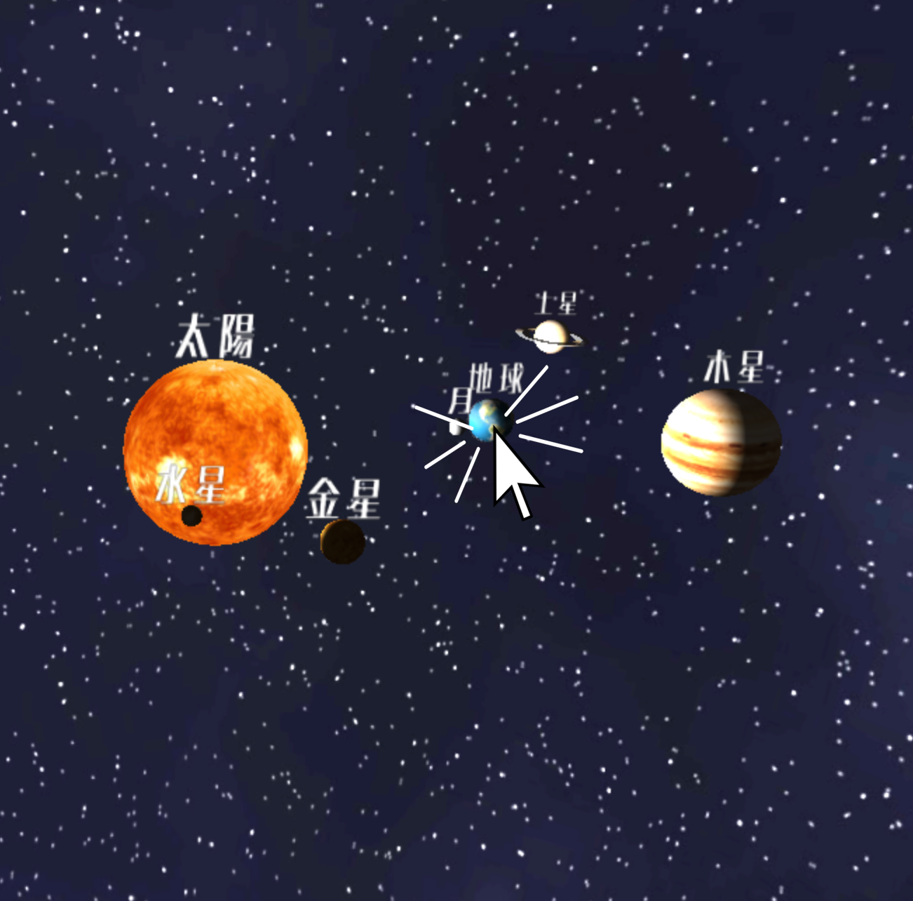
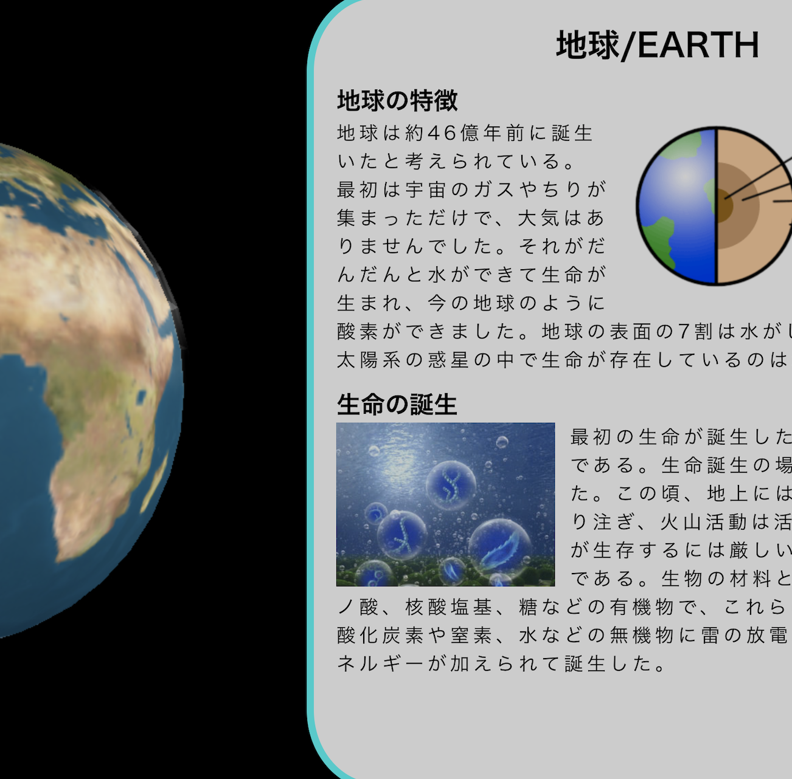

①知りたい惑星をクリック

→

②勉強！
 ：ログイン時間、ログアウトなどが出来る。Aキーでも可能。
：ログイン時間、ログアウトなどが出来る。Aキーでも可能。 ：惑星が動いている状態、止めている状態に切り替え可能。Sキー可能。
：惑星が動いている状態、止めている状態に切り替え可能。Sキー可能。
 ：音声入力可能。Dキーでも可能。
：音声入力可能。Dキーでも可能。
タブの赤丸が音声入力中の目印
①知りたい惑星をクリック
→
②勉強！
：ログイン時間、ログアウトなどが出来る。Aキーでも可能。：惑星が動いている状態、止めている状態に切り替え可能。Sキー可能。：音声入力可能。Dキーでも可能。
タブの赤丸が音声入力中の目印